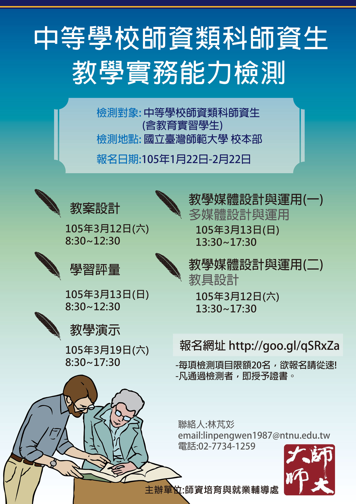

「中等學校師資類科師資生教學實務能力檢測」自1月22日起開放報名
一、檢測目的
•多元評估師資生教學實務能力，補足現今教師資格檢定考試之不足。
二、檢測用途
•可為師資生之教師甄試加分。
•自我審視個人教學實務能力程度，透過證書自我肯定。
三、檢測項目
•教案設計
•教具設計
•學習評量
•多媒體設計與運用
•教學演示
四、檢測對象
•中等學校師資類科師資生（大學部學生、碩博士生、實習學生），每項目限額20名，不限科系。
五、檢測時間
•105年3月12日(六) 08:30-12:30教案設計
•105年3月12日(六) 13:30-17:30教具設計
•105年3月13日(日) 08:30-12:30學習評量
•105年3月13日(日) 13:30-17:30多媒體設計與運用
•105年3月19日(六) 08:30-17:30教學演示
六、報名時間
•105年1月22日至2月22日，採線上報名。
七、報名費用
•免費。為避免資源浪費，若報名後不克前來應於檢測前2週告知，無故缺席者即喪失105學年度之檢測權益。
八、報名地點:
•國立臺灣師範大學校本部(詳細地點報名成功後發信告知)。
九、報名網址
